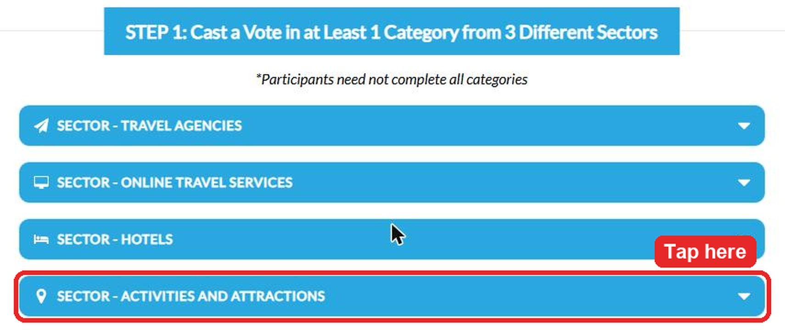
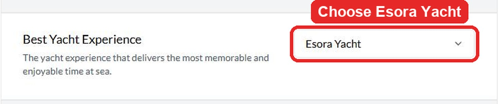
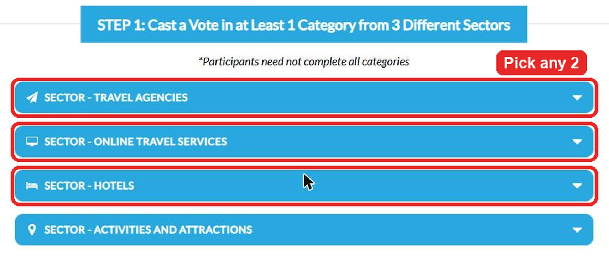
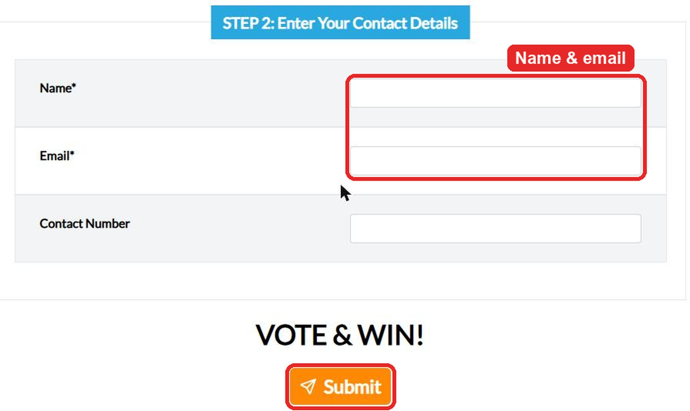

Last step: vote on TripZilla
Your entry into the S$380 voucher draw only counts after you vote and submit on TripZilla's page. It takes about 2 minutes.
To qualify
Vote for Esora Yacht, plus at least 1 category in 2 other sectors.
- 1Step 1 of 4
Tap “Activities and Attractions”
Then scroll down to Best Yacht Experience.

- 2Step 2 of 4
Choose Esora Yacht
Pick it from the Best Yacht Experience dropdown.

- 3Step 3 of 4
Vote in 2 other sectors
Pick any category under two other sectors, e.g. Hotels and Travel Agencies.

- 4Step 4 of 4
Enter your name and email, then Submit
That's your entry into the S$380 draw.

Open TripZilla voting page
Taking you to TripZilla in 30s ·